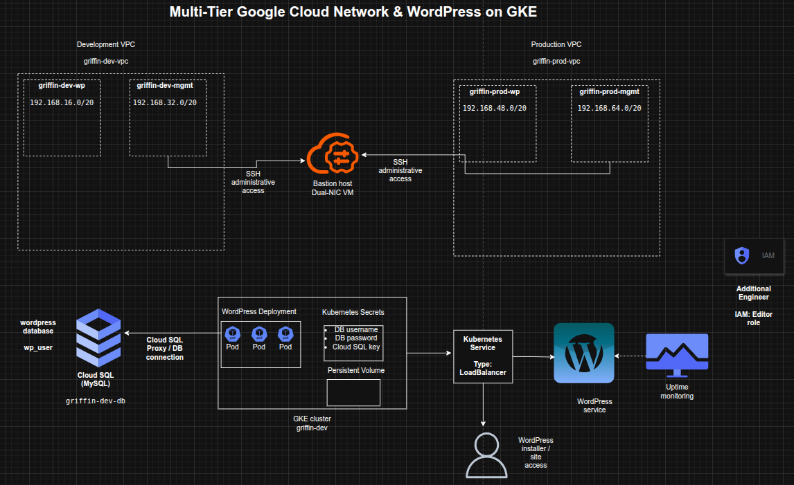

Designing a Multi-Tier Google Cloud Network and Kubernetes WordPress Environment
Designing a Multi-Tier Google Cloud Network and Kubernetes WordPress Environment
Timeline: December 2025
Role: Cloud Engineer / Site Reliability Engineer
Skills: Google Cloud VPC, Subnets, Multi-NIC Bastion Host, Cloud SQL, GKE, Kubernetes, WordPress, Secrets Management, Uptime Monitoring, IAM
Project Summary
This project focused on designing and implementing a multi-tier Google Cloud environment for a WordPress workload, combining networking, database provisioning, Kubernetes deployment, monitoring, and access management. The work involved manually creating separate development and production VPCs, deploying a bastion host connected to both environments, provisioning a Cloud SQL instance for WordPress, creating a GKE cluster in the development network, and deploying WordPress with persistent storage and secure database connectivity.
The implementation demonstrated how to build a segmented cloud environment that supports application deployment, operational access, and service monitoring while following structured naming, subnetting, and access control practices. :contentReference[oaicite:1]{index=1}
Objectives
- Create separate development and production VPC networks manually
- Configure subnets for application and management traffic
- Deploy a dual-homed bastion host connected to both VPCs
- Provision a MySQL Cloud SQL instance for WordPress
- Prepare database credentials and Kubernetes secrets
- Create a GKE cluster in the development application subnet
- Deploy WordPress on Kubernetes with external access
- Enable uptime monitoring for the development site
- Grant project access to an additional engineer
Architecture Overview
The architecture consisted of:
- A development VPC (
griffin-dev-vpc) with:griffin-dev-wpgriffin-dev-mgmt
- A production VPC (
griffin-prod-vpc) with:griffin-prod-wpgriffin-prod-mgmt
- A bastion host with two network interfaces, one connected to each management subnet
- A Cloud SQL for MySQL instance (
griffin-dev-db) hosting the WordPress database - A GKE cluster (
griffin-dev) deployed in the development WordPress subnet - A WordPress Kubernetes deployment and service exposed externally by LoadBalancer
- Kubernetes secrets used for database credentials and Cloud SQL proxy authentication
- An uptime check monitoring application availability
- IAM project access granted to an additional engineer

Implementation & Highlights
1. Development VPC Design
- Created a manual VPC named
griffin-dev-vpc - Added the following subnets:
griffin-dev-wp–192.168.16.0/20griffin-dev-mgmt–192.168.32.0/20
- Separated application and management traffic within the development environment :contentReference[oaicite:2]{index=2}
2. Production VPC Design
- Created a manual VPC named
griffin-prod-vpc - Added the following subnets:
griffin-prod-wp–192.168.48.0/20griffin-prod-mgmt–192.168.64.0/20
- Established a separate production-ready network structure with subnet-level segmentation :contentReference[oaicite:3]{index=3}
3. Bastion Host Architecture
- Deployed a bastion host with two NICs
- Connected one interface to
griffin-dev-mgmt - Connected the second interface to
griffin-prod-mgmt - Ensured SSH administrative access through a centralized management entry point :contentReference[oaicite:4]{index=4}
4. Cloud SQL Provisioning for WordPress
- Created a MySQL Cloud SQL instance named
griffin-dev-db - Initialized the WordPress database environment with:
- database creation
- application user creation
- privilege grants
- Prepared backend database services for the application tier :contentReference[oaicite:5]{index=5}
5. GKE Cluster Deployment
- Created a 2-node GKE cluster named
griffin-dev - Deployed the cluster into the
griffin-dev-wpsubnet - Allocated Kubernetes infrastructure specifically within the development application network zone :contentReference[oaicite:6]{index=6}
6. Kubernetes Environment Preparation
- Copied the supplied Kubernetes manifests from Cloud Storage
- Configured Kubernetes secrets for:
- database username
- database password
- Generated and stored a service account key for the Cloud SQL proxy sidecar
- Prepared persistent storage requirements for WordPress working files
- Established secure and functional application prerequisites before deployment :contentReference[oaicite:7]{index=7}
7. WordPress Deployment on GKE
- Updated the deployment manifest with the Cloud SQL instance connection name
- Created the WordPress deployment using the supplied Kubernetes configuration
- Exposed the application using a Kubernetes Service with external LoadBalancer access
- Verified successful reachability through the WordPress installer page :contentReference[oaicite:8]{index=8}
8. Monitoring Enablement
- Created an uptime check for the WordPress development site
- Added external availability monitoring for the deployed application
- Extended the environment from deployment-only to monitored operational readiness :contentReference[oaicite:9]{index=9}
9. IAM Access Delegation
- Granted the Editor role on the project to an additional engineer
- Ensured the environment could be shared and managed collaboratively
- Incorporated basic team-access enablement into the delivery scope :contentReference[oaicite:10]{index=10}
Design Decisions
- Used separate development and production VPCs to enforce environment isolation
- Split each VPC into application and management subnets for cleaner traffic segmentation
- Used a dual-homed bastion to centralize administrative access across environments
- Chose Cloud SQL as a managed relational backend for WordPress
- Used GKE to host WordPress in a containerized, scalable platform
- Stored database credentials and proxy credentials in Kubernetes secrets
- Added uptime monitoring to validate external application availability
- Included IAM delegation to reflect team-based cloud operations
Results & Impact
- Successfully built a segmented multi-tier Google Cloud environment
- Demonstrated practical use of:
- manual VPC design
- subnet planning
- multi-NIC bastion architecture
- Cloud SQL provisioning
- GKE application hosting
- Kubernetes secrets
- uptime monitoring
- IAM project access control
- Strengthened understanding of how infrastructure, platform, database, and operational layers work together in a cloud-hosted application stack
- Built a realistic foundation for cloud-native application hosting and environment administration
Tools & Technologies Used
- Google Cloud VPC – Network segmentation
- Subnets – Application and management isolation
- Compute Engine – Bastion host deployment
- Cloud SQL for MySQL – Managed database backend
- Google Kubernetes Engine (GKE) – Container orchestration platform
- Kubernetes – Application deployment and secret management
- WordPress – Web application workload
- Cloud Monitoring Uptime Checks – External availability monitoring
- IAM – Project access control
Outcome
This project demonstrates the ability to design and implement a multi-tier cloud environment on Google Cloud that supports networking, secure administration, managed database services, Kubernetes-based application deployment, monitoring, and collaborative access control. It highlights practical skills in cloud network architecture, workload deployment, secrets handling, and operational readiness, making it highly relevant to cloud engineering, DevOps, and site reliability roles.